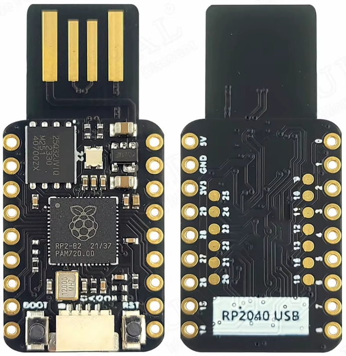

Développement d'un ransomware Python (AES/RSA) déployé par clé physique Raspberry Pi Pico RP2040, suivi du rapport de l'investigation numérique post-infection.
Développer mes connaissances en cryptographie appliquées au développement de malware dans un scénario réaliste pour m'entraîner à la réponse à incident et à la rédaction de rapport professionnel.
L'attaque repose sur l'usurpation d'identité matérielle (HID Emulation) via un microcontrôleur Raspberry Pi Pico (RP2040).
Reconnu par l'hôte comme un simple clavier standard, la clé contourne la sécurité de Windows 10 et exécute une séquence d'actions à grande vitesse :

La Raspberry Pi Pico (RP2040) utilisé pour l'attaque.
L'exécutable déployé est un ransomware fait main conçu en Python implémentant une cryptographie hybride. L'objectif est de cibler le dossier utilisateur (/Documents), de chiffrer et d'ajouter l'extension .crypted aux fichiers, et de déposer une note de rançon sur le bureau.
En amont de l'attaque, la paire d'asymétrie a été générée via OpenSSL :
# Génération de la clé privée RSA (2048 bits)
openssl genrsa -out private.key 2048
# Extraction de la clé publique (à injecter dans le script Python)
openssl rsa -in private.key -pubout -out public.keyLa RAM et le disque ont directement été retirés depuis les fichier de la VM VMware pour analyse.
L'exécution des artéfacts a été faite avec KAPE et des modules EZ via cette commande :
E:\KAPE> kape.exe --tsource C: --tdest E:\KAPE_Triage --tflush --target !KapeTriage,RemoteAdmin,GroupPolicy,LogFiles,RDPCache,StartupInfo,ThumbCache,USBDevicesLogs,WindowsIndexSearch,PowershellConsole,EventTraceLogs,WBEM,WER --mdest E:\KAPE_Modules --mflush --module !EZParser,"Analyseur WMI",PowerShell_Defender_Exclusions,PowerShell_Dns_Cache,PowerShell_NamedPipes,PowerShell_ProcessList_WMI,PowerShell_Startup_Commands,Powershell_Network_Connections_Status,Powershell_Network_Share,Powershell_SMBMapping,Powershell_Services_List,Powershell_User_List,Windows_ARPCache,Windows_IPConfig,Windows_NetStat,Windows_SystemInfo,Windows_qwinsta_RDPSessions,Windows_schtasks,SysInternals_PsInfo --vhdx DESKTOP-R89K9P2L'analyse est en cours...